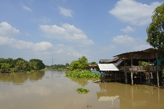
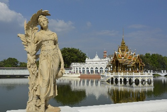
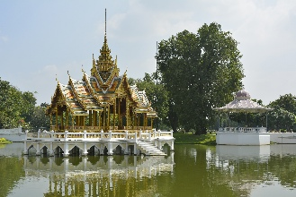
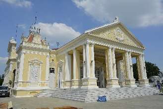
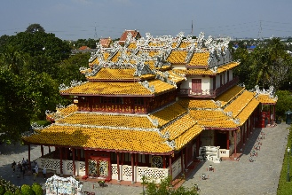
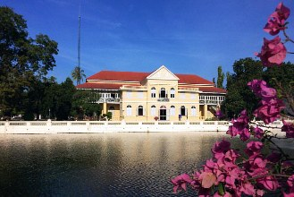
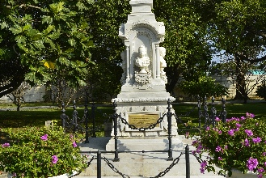
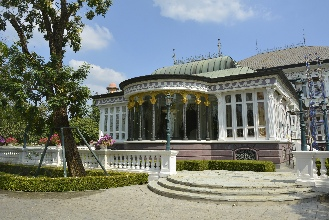
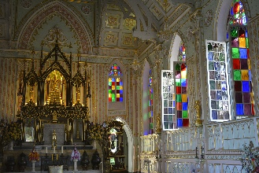

Bang Pa-in
 Cidade há 60km de Bangcoc e próxima à Ayutthaya, que tem como principal atração um antigo palácio de verão da família real.Foi estabelecida no período Ayutthaya com o nome de Khwaeng Uthai.
No período Rattanakosin, Khwaeng Uthai foi dividida entre Khwaeng Uthai Noi e Uthai Yai.
Em 1910 Khwaeng Uthai Noi mudou seu status para distrito e foi renomeada como Phra Ratchawang. Em 1915 o nome foi mudado novamente, desta vez para Bang Pa-in.
Acredita-se que o nome Bang Pa-in seja uma distorção de Bang Phra In (บางพระอินทร์), significando literalmente "Lugar de Indra", em referência ao lugar de Inthraracha, o título de do rei Songtham antes dele assumir o trono.
Acredita-se que ele era filho de Ekathotsarot e de uma mulher local chamada In (อิน) ou Oo In (อออิน).
Ainda no período Ayutthaya a cidade foi chamada certa vez de Bang Kradan (บางกระดาน) ou Bang Khadan (บางขดาน), que significa "lugar plano", já que era uma espaçosa área plana, parte do Campo Thung Luang na bacia do rio Chao Phraya. Esta área foi usada em cerimônias reais para repelir a água durante épocas de cheias.
A cidade tem uma área total de 229.098 km² e sua população em 2000 era de 73.630 habitantes.
Como chegar saindo de Bangcoc
De ônibus: ônibus de 2ª classe com a/c saem da plataforma 99 do Northern Bus Terminal (Moh Chit) em Bangcoc, a cada 30 minutos e custam em torno de ฿$ 70. Por ser um ônibus de 2ª classe, faz várias paradas em cidades, shoppings e qualquer coisa pela caminho, então o percurso leva umas 2 horas.De trem: há 17 linhas diárias saindo da estação Hua Lamphong em Bangcoc em direção à Bang Pa-in. A primeira sai às 4:20 e a última às 19:50, e a passagem custa de ฿$ 12 a ฿$ 112 (dependendo da classe do vagão e se é rápido ou convencional).
Como chegar saindo de Ayutthaya
De microônibus e songthaew: há microônibus e songthaews saindo desde a Estação BKS no centro, e o trajeto leva uns 40 minutos.De barco: não há serviços com horários definidos, mas vários dos cruzeiros turísticos para Ayutthaya param antes em Bang Pa-In.
De táxi: um táxi de Ayutthaya à Bang Pa-in custa em média ฿$ 250.
Ayutthaya na cultura Pop
* Um cenário baseado na Tailândia e chamado "Ayothaya" aparece no MMORPG Ragnarok Online, para PC.* A cidade é um dos cenários do jogo de luta Soul Calibur II (PlayStation 3, Xbox 360, PlayStation 2, GameCube, Arcade, Xbox).
* Os templos no Wat Phra Si Sanphet e no Wat Ratchaburana aparecem nos jogos Street Fighter II, Kickboxer (com o nome de "Stone City"), Mortal Kombat, Mortal Kombat Annihilation e Mortal Kombat Conquest.
* O Buda deitado de Ayutthaya aparece em vários cenários do Sagat nos jogos do Street Fighter.
* Aparece no filme The King Maker, de 2005, e no primeiro filme do Mortal Kombat, além do clássico Kickboxer, com Jean Claude Van Damme.
* A destruição da quadra japonesa em 1630 sob ordem de Prasat Thong e suas consequências é central para uma das histórias nas antologias da série de 1632 de Ring of Fire III - All God's Children in the Burning East.
* No jogo para Nintendo DS, Golden Sun: Dark Dawn, de 2010, os personagens principais visitam a cidade de "Ayuthay", que se baseia bastante na cultura e arquitetura tailandesa.
* Um mapa baseado na Tailândia, chamado Ayutthaya, aparece no jogo Overwatch (disponível para PC, Nintendow Switch, Xbox One e PS4).
Palácio de Bang Pa-In (Summer Palace / พระราชวังบางปะอิน)
Local de beleza incomum, este incrível complexo foi construído pelo rei Prasat Thong, em 1632, mas foi abandonado após o saque da cidade em 1767 praticado
por invasores birmaneses.
O local foi parcialmente restaurado pelo rei Mongkut (Rama IV) na década de 1850.
O palácio, na forma atual, é trabalho principalmente do rei Chulalongkorn (Rama V), que expandiu a área em um jardim versaillesco cheio de construções em estilo europeu, entre 1872 e 1889.
Na última restauração, que aconteceu em 2001, o palácio foi restaurado à sua forma original.
É aberto à visitação porque raramente o atual rei e sua família usam o local.
O local foi parcialmente restaurado pelo rei Mongkut (Rama IV) na década de 1850.
O palácio, na forma atual, é trabalho principalmente do rei Chulalongkorn (Rama V), que expandiu a área em um jardim versaillesco cheio de construções em estilo europeu, entre 1872 e 1889.
Na última restauração, que aconteceu em 2001, o palácio foi restaurado à sua forma original.
É aberto à visitação porque raramente o atual rei e sua família usam o local.

Entrada: ฿$ 100.
Horário: diariamente das 8:00 às 16:00.
Importante! Não são permitidas bermudas, mas você pode comprar uma "saia" para cobrir as pernas, por ฿$ 100.
Plano Interativo do Palácio: www.palaces.thai.net/bp/
Horário: diariamente das 8:00 às 16:00.
Importante! Não são permitidas bermudas, mas você pode comprar uma "saia" para cobrir as pernas, por ฿$ 100.
Plano Interativo do Palácio: www.palaces.thai.net/bp/
Phra Thinang Aisawan Thiphya-Art (Assento Divino da Liberdade Pessoal)
Única construção em estilo tailandês no complexo do palácio, este belo pavilhão no meio de um lago foi designado como o modelo de pavilhão tailandês, um
símbolo nacional.
A estátua no meio representa o rei Rama V e foi erguida por seu filho.
A estátua no meio representa o rei Rama V e foi erguida por seu filho.

Phra Thinang Warophat Phiman (Excelente e Brilhante Moradia Celestial)
Mansão construída em 1876 que abriga o trono do rei Chulalongkorn. Chama atenção por sua rica decoração da virada dos Séculos XIX e XX, em estilo
neoclássico aristocrata europeu, com apenas alguns toques tailandeses aqui e ali.
O palácio ainda é usado pela família real, embora sem muita frequência.
O palácio ainda é usado pela família real, embora sem muita frequência.

Phra Thinang Wehart Chamrun (Residência Real da Luz Celestial)
Construída por um equivalente da Câmara Chinesa do Comércio em 1889 como presente ao rei Chulalongkorn, esta opulenta mansão de 2 andares em estilo
chinês é cheia de vermelho, dourado, madeiras escuras e madrepérolas alinhadas.
Era a residência preferida do rei Vajiravudh (1910-1925) quando visitava o palácio.
Era a residência preferida do rei Vajiravudh (1910-1925) quando visitava o palácio.

Ho Withun Thasana (Mirante do Sábio)
Farol que servia como mirante com vista para o interior.
Foi construído sob ordens do rei Chulalongkorn, em 1881.
Foi construído sob ordens do rei Chulalongkorn, em 1881.
Saphakhan Ratchaprayun (Salão de Encontro dos Parentes Reais)
Construção de 2 andares em estilo colonial, construída em 1879, originalmente para receber os irmãos dos reis. A construção agora abriga um pequeno
museu sobre a história do palácio, o que a torna um bom ponto de início da visita.

Memorial à Rainha Sunanda Kumariratana
Construído no mesmo ano da morte da rainha, este monumento simples, de mármore, possui uma dedicatória em inglês do próprio rei Chulalongkorn.
Em 1881 a rainha e sua única filha, a princesa Karnabhorn Bejraratana, dirigiam-se para o palácio de Bang Pa-In quando a embarcação real que as levava virou.
De acordo com a lei tailandesa da época, tocar alguém da família real era punido com a morte, então as testemunhas do acidente, instruídas por um guarda em outro bote, apenas olharam enquanto elas se afogavam.
O rei Chulalongkorn, chocado com o acontecido, rebaixou e prendeu os oficiais que seguiram a letra da lei à esse custo.
Em 1881 a rainha e sua única filha, a princesa Karnabhorn Bejraratana, dirigiam-se para o palácio de Bang Pa-In quando a embarcação real que as levava virou.
De acordo com a lei tailandesa da época, tocar alguém da família real era punido com a morte, então as testemunhas do acidente, instruídas por um guarda em outro bote, apenas olharam enquanto elas se afogavam.
O rei Chulalongkorn, chocado com o acontecido, rebaixou e prendeu os oficiais que seguiram a letra da lei à esse custo.

Phra Thinang Uthayan Phumisathian
Residência preferida do rei Chulalongkorn em Bang Pa-In.
Foi construída em 1877 em madeira e em estilo de chalé suíço de 2 andares, e foi pintada em 2 tons de verde.
Infelizmente sofreu um incêndio em 1938, durante uma reforma.
A construção atual foi restaurada a pedido da rainha Sirikit.
Foi construída em 1877 em madeira e em estilo de chalé suíço de 2 andares, e foi pintada em 2 tons de verde.
Infelizmente sofreu um incêndio em 1938, durante uma reforma.
A construção atual foi restaurada a pedido da rainha Sirikit.

Wat Niwet Thammaprawat
Templo construído em algum período entre 1688 e 1703 na área da antiga residência do rei Phetracha, próximo ao portão principal ao sul da cidade.
O plano da sua localização foi definido para estar na direção norte-sul, de acordo com rotas de comunicações antigas.
Ao contrário dos outros templos, o rei mandou cobrir todas as construções com telhas amarelas de vidro, e o templo ficou conhecido como Wat Krabueang Khlueap, ou Templo das Telhas de Vidro.
Sua construção levou 2 anos e o templo passou por uma grande renovação no reinado de Borommakot, que teve 3 pares de portas decoradas com belos arranjos em madrepérola. Os 3 pares foram levados para Bangcoc. Um deles está dentro do Templo do Buda de Esmeralda, outro está no Wat Benchamabophit (Templo de Mármore), e outro no Museu Nacional de Bangcoc.
O plano da sua localização foi definido para estar na direção norte-sul, de acordo com rotas de comunicações antigas.
Ao contrário dos outros templos, o rei mandou cobrir todas as construções com telhas amarelas de vidro, e o templo ficou conhecido como Wat Krabueang Khlueap, ou Templo das Telhas de Vidro.
Sua construção levou 2 anos e o templo passou por uma grande renovação no reinado de Borommakot, que teve 3 pares de portas decoradas com belos arranjos em madrepérola. Os 3 pares foram levados para Bangcoc. Um deles está dentro do Templo do Buda de Esmeralda, outro está no Wat Benchamabophit (Templo de Mármore), e outro no Museu Nacional de Bangcoc.

Local: atrás do Palácio de Bang Pa-in.
Entrada: gratuita. Voltar à lista
Entrada: gratuita. Voltar à lista